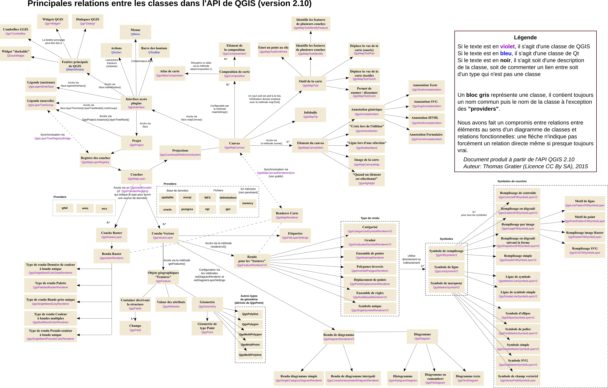

PyQGIS (2)
API
PyQGIS (3)
map
- QgsMapCanvas : widget d'affichage de la carte
- QgsMapRenderer / QgsMapRendererJob : rendu de la carte
- QgsMapTool : intéractions utilisateur avec la carte (déplacement, identification de feature, ...)
- QgsMapLayer : les couches (vector, raster, ...)
feature
- QgsFeature : objets géographiques
- QgsFeatureRenderer : rendu de feature
- QgsGeometry : géometrie (point, polygone, ...)
PyQGIS (4)
divers
- QgsProject : ouverture / lecture / ... de fichier .qgis
- QgsLayerTreeGroup : arbre des couches
- QgisInterface : point d'entrée des plugins Python
Beaucoup (beaucoup) de classes!!
PyQGIS (5)

PyQGIS (6)
Racine
- ci : continuous integration (scripts travis pour linux, OSX, QT4, QT5)
- cmake : scripts CMake
- debian - mac - ms-windows - rpm : le nécessaire pour faire les packages
- doc : auteurs, contributeurs, ...
- i18n : langues
- images/themes/default : icones, ...
- python : binding (.sip), ...
- scripts : des scripts utiles (pre-commit.sh, astyle.sh, ...)
- src : les sources QGIS
- tests : le nécessaire pour les tests unitaires (sources, données de tests, ...)
PyQGIS (7)
src : les répertoires principaux
- app : maptools "spécifiques" (pin/unpin labels, ...), le main!
- core : expression, maplayer, renderer, datadefined, ...
- customwidgets : les widgets custom réutilisables (QgsSpinBox)
- gui : les maptools de base, mapcanvas, messagebar, attributeform, ...
- plugins : les plugin C++
- providers : les dataproviders (memory, postgres, virtual, ...)
- ui : les fichiers .ui
PyQGIS (8)
EXERCICE 5
- TODO : exercice dans la console QGIS / se servir des tests unitaires pour voir
- comment tiliser l'API

PyQGIS (9)
Plugin - où?
Dépôt de plugin : http://plugins.qgis.org/plugins/
Installation : Plugin Manager
PyQGIS (10)
Plugin - Structure
PYTHON_PLUGINS_PATH/
MyPlugin/
__init__.py --> *required*
mainPlugin.py --> *required*
metadata.txt --> *required*
resources.qrc --> *likely useful*
resources.py --> *compiled version, likely useful*
form.ui --> *likely useful*
form.py --> *compiled version, likely useful*
Plugin Builder
Plugin Buider : http://geoapt.net/pluginbuilder/
PyQGIS (11)
Documentation
http://docs.qgis.org/testing/en/docs/pyqgis_developer_cookbook/
http://www.qgistutorials.com/fr/docs/building_a_python_plugin.html
http://docs.qgis.org/testing/en/docs/pyqgis_developer_cookbook/plugins.html
PyQGIS (12)
EXERCICE